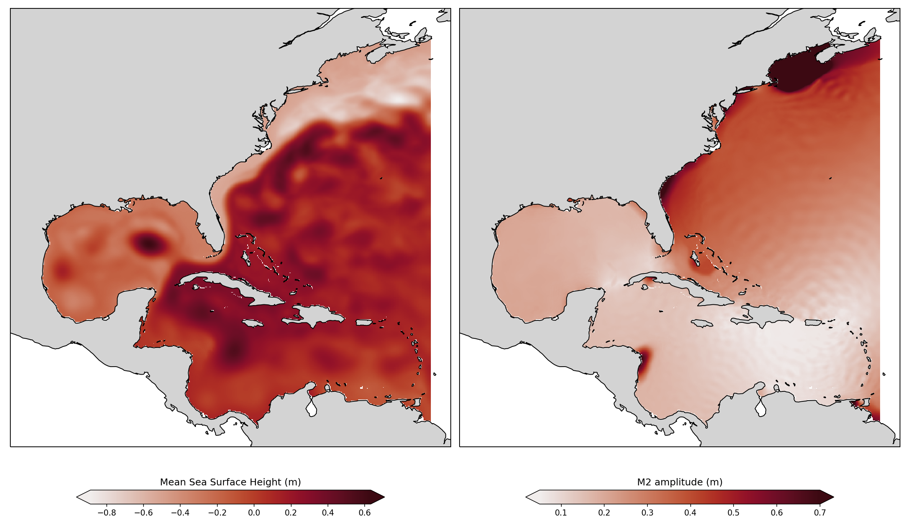

Entry 26¶
Extracting tidal components from modeled Sea Surface Height¶
Filipe Fernandes
# Extracting tidal components from modeled Sea Surface Height
The left panel is shows the Sea Surface Height (SSH) mean for the modeled period from 2016-05-02 00:00:00 to 2016-05-28 18:00:00, with a time interval of 3 hours (total of 200 points in time). The spatial resolution is 482 x 402, which means we have to 193764 time-series with 200 points each for SSH.
We are looking for the tidal components, so we need to perform an harmonic analysis on those time-series. This an [embarrassingly parallel](https://en.wikipedia.org/wiki/Embarrassingly_parallel) where a naive loop would take ~4 hours to run the analysis on all those time series. Thanks to concurrent.futures we can use the ThreadPoolExecutor to submit the tasks to different cores and get a speed up of approximately the number of cores available in the machine. The notebook was executed in a 4 core machine which reduced the analysis time down to ~1 hour.
In the left panel we have the average SSH, where we can find some features like the loop-current, the Gulf Stream, and many eddies due to the ocean’s variability. It is virtually impossible to understands tides looking at the SSH alone.
The panel on the right is the result of the harmonic analysis. We are plotting only the [principal lunar semi-diurnal component (M2)](https://en.wikipedia.org/wiki/Tide). The colorbar is truncated up to 0.7 meters to make it easier to visualize the deep ocean variability, otherwise the bay amplification from regions like the Gulf of Maine would hinder the variability on the deep ocean. It is possible to find [an amphidromic point](https://en.wikipedia.org/wiki/Amphidromic_point) near Puerto Rico, from there we can follow the [tidal wave](https://xkcd.com/1010/) crests and troughs all the way to the coast. At the coast we can identify some bay amplification points, like the Gulf of Maine, where the largest tides in the world are found.
These two images are relatively simple but show the power of python for data analysis.